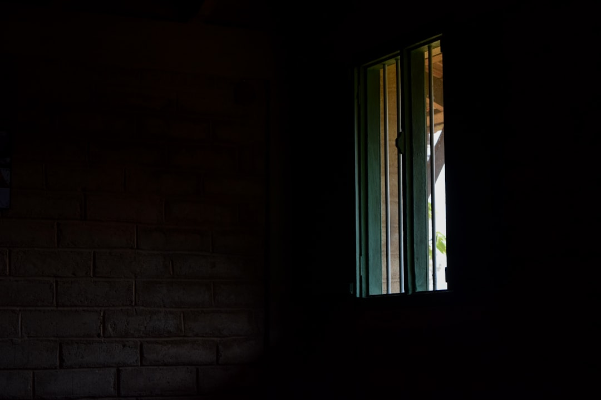

Minimalist design stands as one of the most influential movements in contemporary visual branding, proving that restraint often communicates more powerfully than excess. This philosophy, rooted in the principle that every element must serve a purpose, has shaped how Australian creative studios approach brand identity development.
At its core, minimalism isn't about removing decoration—it's about distilling concepts to their purest, most effective form. This approach creates visual identities that communicate clearly, age gracefully, and resonate with audiences seeking authenticity in an increasingly cluttered marketplace.
The Philosophy Behind Minimalist Design
Minimalist design philosophy emerged from various cultural and artistic movements, including Japanese aesthetics, Bauhaus principles, and Swiss typography. These traditions emphasized functionality, clean lines, and intentional use of space, creating a visual language that transcends cultural boundaries and temporal trends.

The contemporary interpretation of minimalism in branding focuses on clarity of communication. Each color, typeface, shape, and photographic element undergoes scrutiny to ensure it contributes meaningfully to the brand story. This disciplined approach yields identities that feel effortless yet intentional, sophisticated yet approachable.
Typography as the Foundation
Refined typography forms the backbone of minimalist visual branding. The typeface selection process becomes crucial when design relies on few elements. Sans-serif fonts with clean geometric forms typically dominate minimalist palettes, offering readability and modern aesthetic sensibility.
Typography hierarchy in minimalist design uses size, weight, and spacing rather than decorative elements to guide viewer attention. This creates clear communication paths that respect audience intelligence while maintaining visual interest through proportional relationships and negative space.
"Typography should be invisible until it needs to speak, then it should say everything with grace and precision."
The Role of Neutral Tones
Neutral color palettes define minimalist branding aesthetics. Whites, grays, blacks, and earthy tones create versatile foundations that adapt across applications while maintaining brand consistency. These colors allow content and photography to take center stage without competing for attention.
Within neutral frameworks, strategic accent colors gain tremendous impact. A single vibrant hue used sparingly becomes memorable precisely because of its restraint. This principle aligns perfectly with our coastal-inspired approach, where subtle oceanic blues or warm sand tones punctuate predominantly neutral schemes.
Negative Space as Active Element
Perhaps minimalism's most misunderstood aspect involves negative space—the areas where nothing appears. Far from being empty, these spaces actively shape perception and guide attention. Skilled designers treat negative space as a design element with equal importance to positive forms.
Generous negative space creates breathing room that prevents visual fatigue and allows key messages to resonate. In photography for branding, this translates to compositions with deliberate emptiness that frames subjects powerfully. The space around elements often communicates as much as the elements themselves.
Functionality Meets Aesthetics
Minimalist design succeeds when form and function merge seamlessly. Every design decision must pass the dual test of visual appeal and practical utility. Websites designed with minimalist principles load faster, navigate intuitively, and convert effectively because complexity doesn't obscure user goals.
This functionality extends to print materials, packaging, and environmental branding. Clean layouts with clear hierarchies ensure messages reach audiences without confusion. The aesthetic pleasure derived from minimalist design often stems from this clarity—viewers appreciate being respected through straightforward communication.
Material Quality and Craftsmanship
When design strips away excess, material quality and execution craftsmanship become paramount. Premium paper stocks, precise printing techniques, and careful attention to finishing details elevate minimalist designs from simple to sophisticated. These tactile qualities add depth that pure visual design cannot achieve alone.
In digital applications, quality manifests through performance, typography rendering, and micro-interactions. Smooth animations, crisp images, and thoughtful transitions demonstrate the care invested in user experience. These details separate professional minimalist design from merely sparse layouts.
Photography in Minimalist Branding
Photography within minimalist frameworks requires particular consideration. Images must possess clean compositions, controlled lighting, and clear subjects. Busy backgrounds detract from minimalist aesthetics, so photographers often employ shallow depth of field or simple backgrounds to maintain visual calm.
Natural lighting aligns perfectly with minimalist philosophy because it creates authentic, unforced atmospheres. The bright, clean aesthetic achieved through proper natural lighting techniques complements neutral color schemes and refined typography without introducing visual complexity.
Consistency Across Touchpoints
Minimalist branding demands rigorous consistency across all touchpoints. With fewer elements comprising the visual identity, variations become immediately noticeable and potentially damaging. Brand guidelines for minimalist systems must precisely define spacing, sizing, color usage, and acceptable variations.
This consistency builds recognition and trust. Audiences encountering your brand across different mediums should experience the same essential character, whether viewing a website, receiving business cards, or entering physical spaces. The repetition inherent in this consistency reinforces brand memory without feeling repetitive.
"Consistency in minimalism isn't limitation—it's liberation from the burden of unnecessary choices."
Balancing Minimalism with Brand Personality
The challenge in minimalist branding lies in maintaining distinctiveness while embracing restraint. Without careful consideration, minimalist brands can feel generic or cold. Injecting personality requires subtle touches—a unique typeface pairing, distinctive photography style, or characteristic use of negative space.
Our coastal-inspired accents serve this function, adding warmth and geographical specificity without compromising clean aesthetics. These subtle personality markers distinguish brands within minimalist frameworks, making them memorable and emotionally resonant while preserving sophisticated simplicity.
Minimalism in Digital Interfaces
Digital interfaces particularly benefit from minimalist principles. Users navigate complex systems more effectively when visual noise decreases. Clear typography, generous spacing, and logical hierarchies reduce cognitive load, allowing users to focus on content and tasks rather than deciphering interfaces.
Responsive design naturally aligns with minimalism because streamlined interfaces adapt more gracefully across devices. Mobile-first approaches often produce minimalist solutions by necessity, and these solutions frequently improve desktop experiences as well through their clarity and focus.
Sustainability and Minimalism
Contemporary minimalist design increasingly intersects with sustainability values. Reducing visual excess often correlates with reducing material waste. Simple packaging requires less material, refined digital experiences consume less energy, and timeless design reduces the need for frequent redesigns.
This alignment between aesthetic and environmental consciousness resonates with modern audiences, particularly in Australia where environmental awareness runs high. Brands embracing minimalist design can authentically communicate sustainability commitments through their visual choices.
Common Minimalist Design Mistakes
Despite its apparent simplicity, minimalist design proves difficult to execute well. Common mistakes include confusing minimal with boring, failing to establish clear hierarchies, using poor quality imagery, or removing so much that communication suffers. True minimalism requires more decisions, not fewer—each element's inclusion or exclusion demands justification.
Another pitfall involves following minimalist trends without considering brand appropriateness. Minimalism suits certain brands and messages better than others. A playful children's brand might need more visual energy than strict minimalism allows, while a luxury professional service might thrive within minimalist constraints.
Implementing Minimalist Principles
Transitioning to minimalist branding requires strategic planning. Begin by auditing existing brand elements, identifying which truly contribute to communication versus those present through habit or uncertainty. This process often reveals redundancies and opportunities for consolidation.
Develop a restricted design system with defined fonts, colors, spacing values, and photography guidelines. This system becomes the toolkit from which all brand expressions emerge. The constraint breeds creativity, forcing designers to find solutions within defined parameters rather than defaulting to visual addition.

Measuring Minimalist Design Success
Success metrics for minimalist branding focus on clarity and effectiveness rather than visual impressiveness. Can audiences immediately understand your message? Does the design facilitate desired actions? Do users report positive experiences with your interfaces? These functional measures matter more than subjective design opinions.
Brand recognition and recall also indicate minimalist design effectiveness. If distinctive enough, minimalist brands become quickly recognizable from minimal visual cues. This recognition efficiency demonstrates successful distillation of brand essence into its most powerful form.
The Future of Minimalist Branding
Minimalist design continues evolving as technology and cultural contexts shift. Current trends incorporate subtle animations, variable typography, and immersive experiences that maintain minimalist principles while leveraging new capabilities. The core philosophy persists even as execution methods advance.
We anticipate increasing emphasis on accessibility within minimalist frameworks. High contrast, clear typography, and simple navigation benefit all users while embodying minimalist values. This convergence of aesthetic and ethical design practice strengthens minimalism's relevance in contemporary branding.
Conclusion
Minimalist design in visual branding represents far more than a stylistic choice—it's a communication strategy that respects audiences through clarity and purpose. By embracing refined typography, neutral tones with strategic accents, generous negative space, and quality craftsmanship, brands create timeless identities that cut through marketplace noise.
At Salt & Frame, we've witnessed how minimalist principles amplify rather than diminish brand impact. When every element carries weight and purpose, visual identities communicate with power and precision. This approach, combined with bright natural lighting and coastal-inspired warmth, creates contemporary Australian aesthetics that resonate authentically with sophisticated audiences seeking substance over superficial decoration.
Ready to Create a Powerful Minimalist Brand Identity?
Let's discuss how clean, contemporary design can elevate your brand's visual communication.
Start Your Project